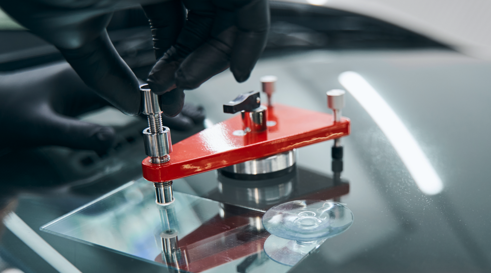

Послуги
Більше послуг-

РЕМОНТ АВТОСКЛА
У компанії Glasscar - унікальні технології і інноваційне обладнання. Ремонт автомобільного скла проводимо із застосуванням спеціальних високоміцних фірмових полімерів. Склади на полімерній основі мають однаковий коефіцієнт заломлення зі склом. Це виключає спотворення зображення. Зона ремонту ретельно полірується, так що залишається непомітною. Структурна міцність скла відновлюється на 100%, а значить керувати автомобілем буде безпечно.
Детальніше -

ЗАМІНА АВТОСКЛА
Заміна автомобільного скла в центрах Glasscar виконується професійними фахівцями з багаторічним досвідом роботи. За допомогою спеціалізованого обладнання і застосування інноваційних методів, забезпечується висока швидкість і точність установки скла. Glasscar співпрацює з виробниками і постачальниками сертифікованої продукції. Ми встановлюємо сертифіковані автомобільні стекла тільки від перевірених виробників.
Детальніше